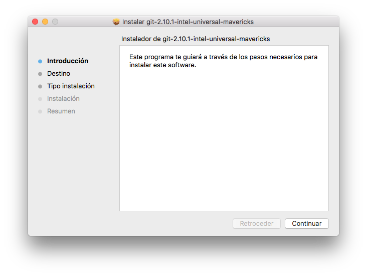

Git
¿Qué es git?
Git es un sistema de control de versiones gratuito y open source diseñado por Linus Torvalds. Está pensado para manejar desde pequeños proyectos a grandes proyectos de forma rápida y eficiente.
¿Cómo se instala git?
Linux
La forma más sencilla de instalar git en Linux es a través de la terminal, haciendo uso del gestor de paquetes de la distribución en cuestión. En Fedora, basta con ejecutar:
$ sudo yum install git-all
Si por el contrario, queremos instalar git en una distribución basada en Debian, debemos ejecutar:
$ sudo apt-get install git-all
Para el resto de distribuciones puedes encontrar más información pulsando en el siguiente enlace: https://git-scm.com/download/linux
Mac
Existen diferentes formas de instalar git en Mac.
La primera forma, y más sencilla de todas, es usando el instalador gráfico de git que puedes descargar aquí.

Otra forma de instalar git es por línea de comandos. Si tienes instalado Homebrew en tu equipo, ejecuta:
$ sudo brew install git
Si prefieres instalar git por medio de MacPorts, ejecuta:
$ sudo port install git-core +svn +doc +bash_completion +gitweb
Windows
Instalar git en Windows es bastante sencillo. Para ello, tenemos que dirigirnos a siguiente enlace https://git-scm.com/download/win.
Una vez hayamos pulsado sobre él, comenzará la descarga de un ejecutable. Cuando haya finalizado la descarga, lo ejecutamos y seguimos los pasos indicados en la pantalla para su instalación.

Comandos básicos de git
Crear un repositorio
Nos situamos en el interior del directorio que contiene nuestro proyecto.
$ git init
Comprobar el estado de git
$ git status
Añadir ficheros al control de versiones
$ git add .
Realizar un commit
$ git commit
En este caso se nos abrirá nuestro editor por defecto para que introduzcamos el nombre del commit y su descripción.
Si por el contrario, deseamos introducir únicamente el nombre del commit, podemos ejecutar:
$ git commit -m "nombre_del_commit"
Añadir un repositorio remoto
$ git remote add <nombre_repositorio> <direccion_del_repositorio_remoto>
Clonar un repositorio
$ git clone <direccion_del_repositorio_remoto>
En este caso, el nombre del repositorio remoto que se añade por defecto es: origin.
Empujar un repositorio
$ git push -u <nombre_repositorio_remoto> <rama>
Crear una rama
$ git branch <nombre_rama>
Borrar una rama
$ git branch -d <nombre_rama>
Cambiar de rama
$ git checkout <nombre_rama>
Fusionar ramas
$ git merge <nombre_rama>